Kumpulan lomba, webinar, dan penghargaan yang membentuk cara saya berpikir dan berkarya — disusun seperti gulungan film, satu frame untuk satu momen.
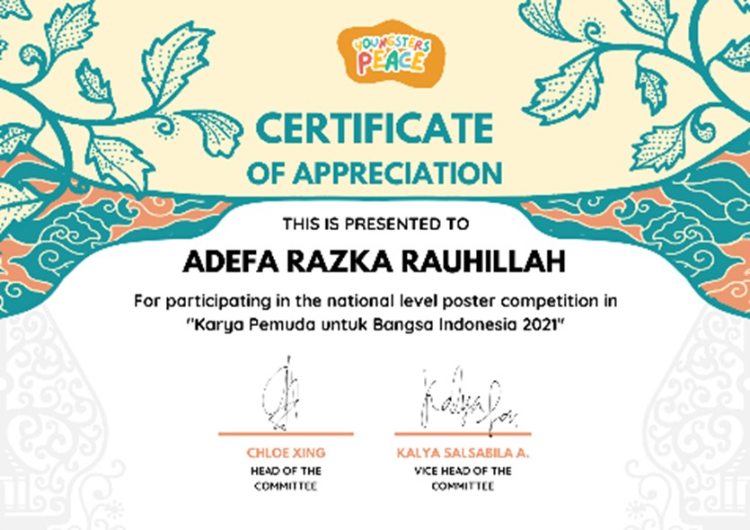
Pada tahun 2021, saya mengikuti lomba poster bertajuk Karya Pemuda Bangsa Indonesia sebagai bentuk partisipasi dalam menuangkan ide dan gagasan kreatif melalui media visual. Dalam kompetisi ini, saya mengembangkan kemampuan dalam menyampaikan pesan secara komunikatif dan estetis, sekaligus melatih kepekaan terhadap isu yang relevan dengan peran generasi muda dalam pembangunan bangsa.
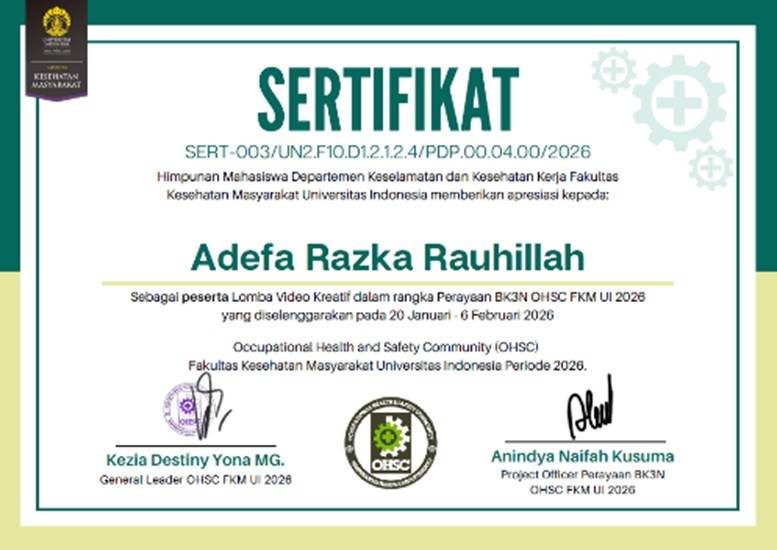
Pada tahun 2026, saya berpartisipasi sebagai peserta dalam lomba video kreatif yang diselenggarakan dalam rangka B3KN OHSC FKM UI 2026. Kegiatan ini menjadi wadah bagi saya untuk mengembangkan ide kreatif sekaligus menyampaikan pesan secara visual terkait isu kesehatan dan keselamatan kerja, serta melatih kemampuan dalam produksi video, storytelling, dan penyampaian pesan yang komunikatif kepada audiens.
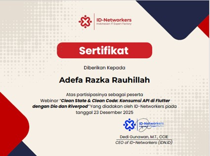
Saya mengikuti webinar berjudul Clean State and Clean Code: Konsumsi API di Flutter dengan Dio Riverpod sebagai upaya memperdalam pemahaman di bidang pengembangan aplikasi, khususnya dalam membangun kode yang rapi, terstruktur, dan efisien. Saya mempelajari konsep clean architecture serta praktik terbaik dalam mengelola konsumsi API menggunakan Flutter dengan bantuan library Dio dan Riverpod.
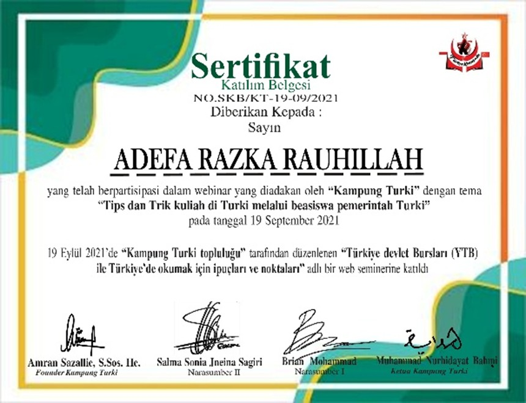
Saya mengikuti webinar berjudul Tips Trik Kuliah di Turki Beasiswa Pemerintah Turkey 2021 sebagai bentuk eksplorasi peluang studi lanjut di luar negeri. Melalui kegiatan ini, saya memperoleh wawasan mengenai prosedur pendaftaran, persyaratan, serta strategi dalam meraih beasiswa pemerintah Turki, sekaligus memperluas perspektif terkait pengalaman kuliah di lingkungan internasional.
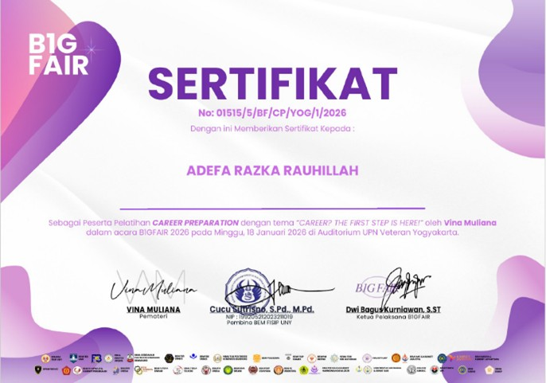
Saya mengikuti webinar Career Preparation Bigfair 2026 sebagai bagian dari upaya mempersiapkan diri menghadapi dunia kerja. Saya memperoleh pemahaman mengenai strategi membangun karier, mulai dari penyusunan CV yang efektif, pengembangan keterampilan yang relevan, hingga kesiapan menghadapi proses rekrutmen di era profesional yang kompetitif.
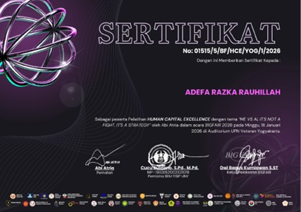
Saya mengikuti webinar Human Capital Excellence Bigfair 2026 sebagai bagian dari upaya memperluas pemahaman di bidang pengembangan sumber daya manusia — mulai dari pengelolaan human capital, strategi pengembangan talenta, hingga peran SDM dalam mendukung pertumbuhan organisasi di era modern.
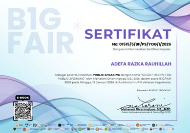
Saya mengikuti webinar Public Speaking Bigfair 2026 sebagai upaya mengembangkan kemampuan komunikasi, khususnya berbicara di depan umum secara percaya diri dan terstruktur — mempelajari teknik penyampaian pesan, pengelolaan intonasi dan bahasa tubuh, serta cara membangun interaksi yang baik dengan audiens.
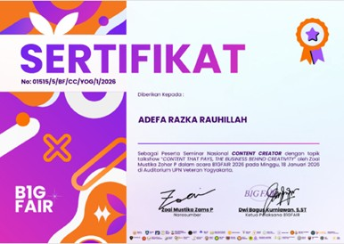
Saya mengikuti webinar Content Creator Bigfair 2026 sebagai upaya mengembangkan wawasan di bidang pembuatan konten digital — mempelajari strategi membangun konten yang menarik, memahami tren digital, serta mengoptimalkan peran sebagai content creator dalam membangun audiens dan personal branding.
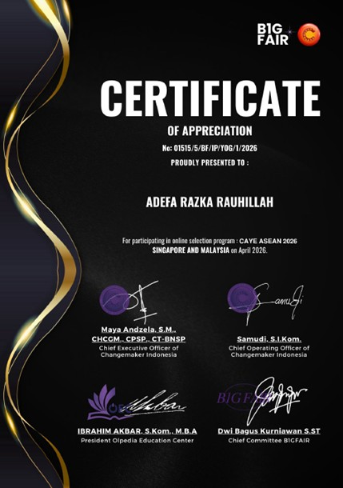
Saya mengikuti tahap seleksi online program CAYE ASEAN 2026 sebagai bagian dari upaya mengembangkan diri dalam lingkup internasional. Proses seleksi ini menuntut kemampuan berpikir kritis, komunikasi, serta kesiapan menghadapi tantangan global, sekaligus memberikan pengalaman berharga dalam berkompetisi di tingkat regional ASEAN.
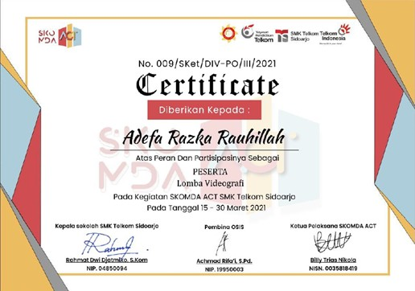
Saya berpartisipasi sebagai peserta dalam lomba videografi yang diselenggarakan pada Skomda ACT SMK Telkom Sidoharjo sebagai sarana mengembangkan kemampuan di bidang produksi video — mengasah keterampilan dalam pengambilan gambar, editing, serta penyusunan alur cerita visual.
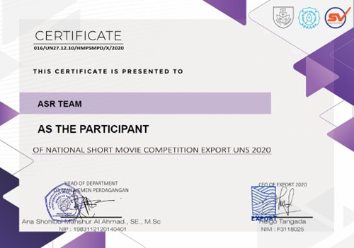
Saya berpartisipasi sebagai peserta dalam lomba film pendek Short Movie Export UNS 2020 sebagai bentuk pengembangan minat di bidang videografi dan storytelling — mengasah kemampuan merancang alur cerita, pengambilan gambar, serta proses editing untuk menghasilkan karya visual yang komunikatif.
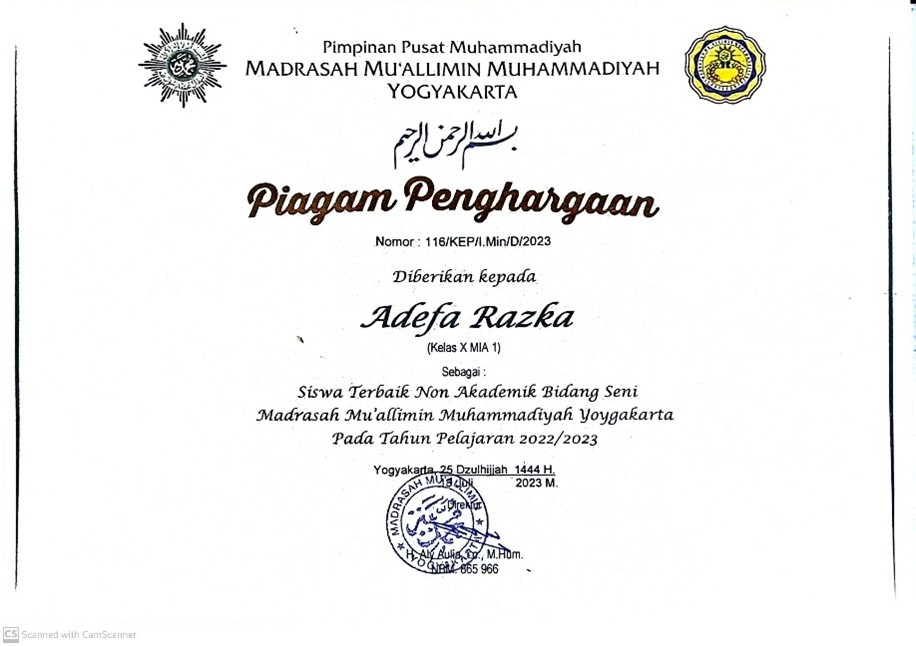
Saya meraih penghargaan sebagai siswa terbaik non-akademik bidang seni di Madrasah Mu'allimin Muhammadiyah Yogyakarta pada tahun ajaran 2022/2023 — apresiasi atas dedikasi dan konsistensi dalam mengembangkan potensi di bidang seni serta komitmen di luar aspek akademik.
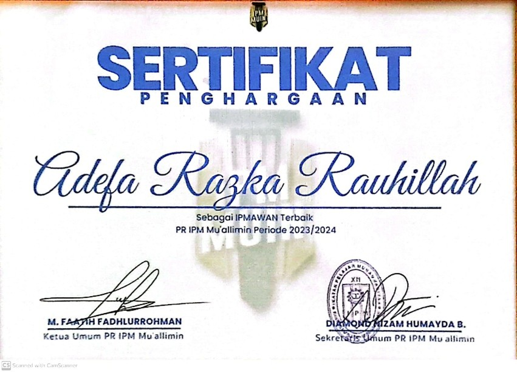
Saya meraih penghargaan sebagai IPMAWAN Terbaik di PR IPM Mu'allimin periode 2023/2024 — apresiasi atas kontribusi aktif dalam organisasi, mencerminkan kemampuan kepemimpinan, tanggung jawab, serta konsistensi menjalankan program kerja.
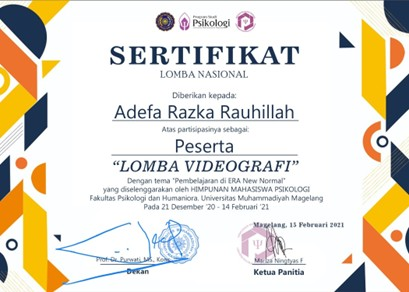
Saya berpartisipasi sebagai peserta dalam lomba videografi yang diselenggarakan oleh Himpsikologi Universitas Muhammadiyah Magelang sebagai sarana mengembangkan kemampuan di bidang fotografi — mengasah kepekaan visual, komposisi gambar, serta kemampuan menangkap momen bernilai estetika.
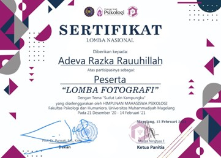
Saya berpartisipasi sebagai peserta dalam lomba fotografi yang diselenggarakan oleh Himpsikologi Universitas Muhammadiyah Magelang sebagai sarana mengembangkan kemampuan di bidang fotografi — mengasah kepekaan visual, komposisi gambar, serta kemampuan menangkap momen bermakna.
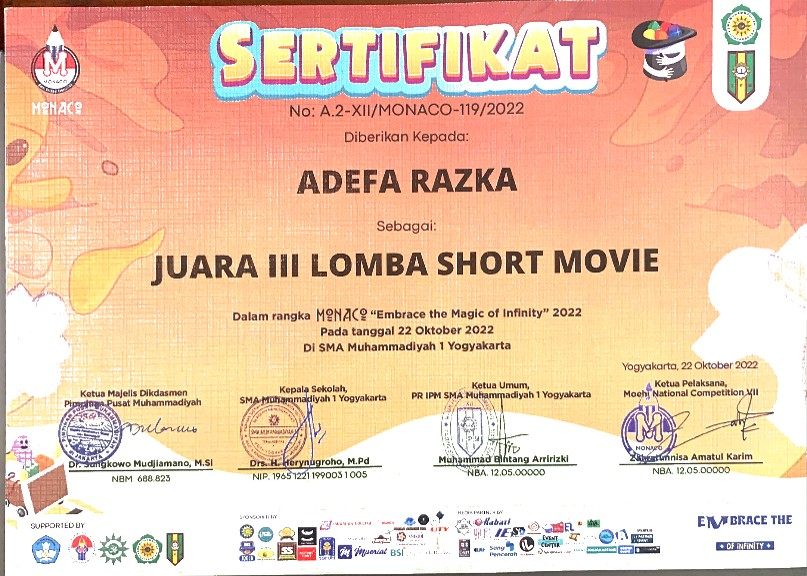
Saya berperan sebagai editor dalam produksi film pendek yang berhasil meraih juara 3 tingkat nasional pada ajang Lomba Short Movie Monaco. Saya bertanggung jawab dalam proses penyuntingan visual, pengolahan alur cerita, serta memastikan kualitas akhir video.
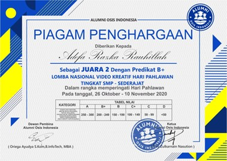
Saya meraih juara 2 dalam lomba video kreatif pada kegiatan PMBA Video Kreatif Hari Pahlawan 2020 — apresiasi atas kemampuan mengolah ide dan menyampaikan pesan melalui media visual, mulai dari konsep, pengambilan gambar, hingga proses editing.
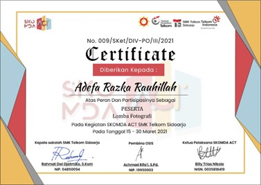
Saya berpartisipasi sebagai peserta dalam lomba fotografi yang diselenggarakan oleh SMK Telkom Sidoharjo pada tahun 2021 — mengasah keterampilan komposisi, pencahayaan, serta kepekaan menangkap momen bernilai estetika dan makna visual.
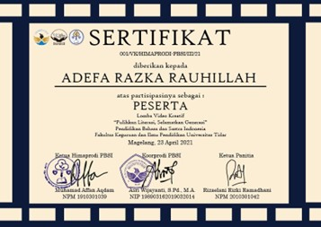
Saya berpartisipasi sebagai peserta dalam lomba video kreatif yang diselenggarakan oleh Universitas Tidar pada tahun 2021 — mengasah keterampilan merancang konsep, pengambilan gambar, serta proses editing untuk karya visual yang komunikatif.
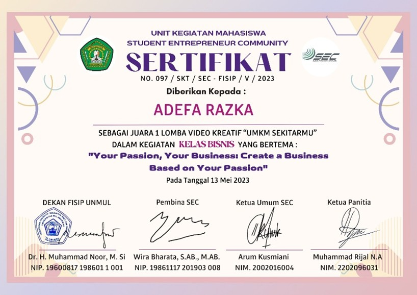
Saya meraih juara 1 dalam lomba video kreatif yang diselenggarakan oleh Universitas Mulawarman pada tahun 2023 — mencerminkan keterampilan dalam seluruh proses produksi video, dari perencanaan konsep, pengambilan gambar, hingga editing yang berdampak.
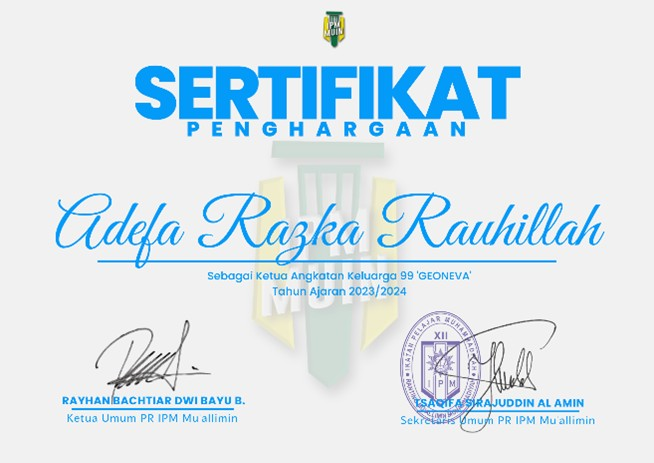
Saya dipercaya sebagai ketua angkatan lulusan 2025 di Madrasah Mu'allimin Muhammadiyah Yogyakarta sejak tahun 2023 — mengoordinasikan komunikasi antar siswa, memimpin berbagai kegiatan angkatan, serta menjaga kekompakan hingga masa kelulusan.